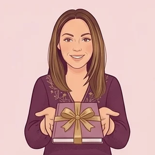

Tout est offert
Tout ça, c'est pour toi. Et c'est gratuit.
Ton arbre familial, tes nombres, ton ciel, tes blessures, ton prénom, des carnets à imprimer… Choisis par où commencer : pas de carte bancaire, pas de piège.
En 1 minute Juste pour voir
Une date, un prénom, et c'est parti.
En 5 minutes Les incontournables
Des tests et des lectures complètes, avec un résultat tout de suite.
Les blessures de l'âme
Rejet, abandon, humiliation, trahison, injustice : reconnais celle qui se rejoue.

Ton thème numérologique
Chemin de vie, nombres du nom, cycles, et ton livret PDF de plus de 30 pages.

Ton thème astral
Soleil, Lune, ascendant, planètes et maisons, reliés à ton histoire familiale.
Le test de l'arbre de vie
Vingt affirmations pour voir les sphères lumineuses chez toi, et celles à nourrir.
Le parcours guidé
Quelques questions pour nommer ce qui se répète dans ta sécurité, tes liens et ta vie.
Les dates qui reviennent
Le calculateur du syndrome d'anniversaire : les âges et les dates qui se répondent.
Le grand outil Le cœur de Genesolia

Ton arbre familial, qui repère pour toi ce qui se répète
Dessine ta famille sur plusieurs générations. L'outil fait apparaître tout seul les prénoms transmis, les âges et les dates qui reviennent, les événements qui se répètent.
- Gratuit, sans inscription, avec un tutoriel pas à pas
- Import de ton arbre depuis Geneanet, Heredis (GEDCOM ou PDF)
- Numérologie et astrologie de chaque personne
Avec ton compte gratuit Encore plus
Un e-mail et un mot de passe suffisent. Toujours 0 €.
Ton arbre sauvegardé
Retrouvé sur ton téléphone et ton ordinateur, avec son historique.
Le rapport de ton arbre
Toute la lecture de ta famille en PDF : répétitions, nombres, signes.
Ton guide du mois
Ton nombre du mois, le ciel réel et les dates de ton arbre, chaque mois.

Mon suivi
Sortir de ta boucle une semaine à la fois, avec ton journal privé.
À télécharger À imprimer et à garder

Ces carnets sont pour toi : imprime-les, remplis-les à ton rythme, et garde-les.
Le carnet des deux cycles
Neuf pages pour repérer ta boucle et ton arbre sur trois générations.

Le premier carnet du Cercle
« Ceux qui sont venus avant toi » : thème, exercices, rituel et méditation.
Le génosociogramme vierge
Le modèle à imprimer pour remplir ton arbre à la main, en famille.

Les images à partager
Des phrases pour t'affirmer ou poser tes limites, prêtes pour tes stories.
Pour comprendre À lire

Tes rêves
De Jung aux peuples anciens : une série en huit articles sur la langue des rêves.

Le ciel du mois
Lune, éclipses, rétrogrades et nombre du mois, avec une question pour ta famille.
Le blog
Prénoms transmis, loyautés, fratrie, deuils, argent : des articles simples et sourcés.
La formation Module 1 offert
Sors de la boucle : teste le module 1 gratuitement
Huit modules pour arrêter de répéter les mêmes schémas, avec une séance audio guidée et un geste concret à chaque étape. Le premier module est offert : la feuille de cours, la séance audio et le cahier d'exercices, envoyés par e-mail étape par étape.
- Module 1 offert à partir du 1er novembre
- Inscriptions à la formation complète le 7 novembre
- Tarif fondatrice réservé à la liste d'attente
Tu as entre 18 et 25 ans ?
Il ne répond plus, tes parents, l'argent, ta place : choisis ta situation et repars avec ce qui se joue, un geste pour aujourd'hui et les mots pour le dire.
Et si tu veux aller plus loin
Le Cercle : un rendez-vous chaque mois
Tout ce qui est sur cette page reste gratuit. Le Cercle ajoute ce qui aide vraiment à avancer : le rythme.
- Un nouveau carnet à imprimer chaque mois
- Ton suivi semaine après semaine
- Ton mois personnel et la lettre du ciel
- Tous les livrets, débloqués au fil des mois